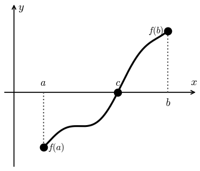

Lesson 4: The Intermediate Value Theorem
In earlier courses you learned why each equation below has no solution.
So it is useful to know when a solution must exist.
Assume \(a < b\). Suppose \(f(x)\) is continuous on \([a, b]\), and both of the following are true.
- \(f(a)\) is negative
- \(f(b)\) is positive
Then there is at least one number \(c\) with \(a < c < b\) such that \(f(c) = 0\). That is, \(c\) is a solution of \(f(x) = 0\).
The same is true if f(a) is positive and f(b) is negative.

Idea: Solutions do not always exist. But under the right assumptions, this theorem guarantees at least one does. Don’t underestimate the usefulness of knowing a solution exists!
Find an interval containing a solution to the equation below.
Let \(f(x) = e^{-x} + \sin x\). Make a table of values, using radians and four decimal places, and look for a sign change.
| \(x\) | \(f(x)\) |
|---|---|
| 1 | 1.2094 |
| 2 | 1.0446 |
| 3 | 0.1909 |
| 4 | −0.7385 |
\(f(3)\) is positive and \(f(4)\) is negative. The function is continuous, so the Intermediate Value Theorem says a solution \(c\) must exist between 3 and 4.
No algebraic procedure finds this solution exactly. Using technology, \(c \approx 3.0964\). There are more solutions, too!
Now You Try
Find an interval containing a solution to the equation below.
Let \(f(x) = 2x^3 - 3x^2 - 3x - 5\). Use a table of values to look for a sign change.
| \(x\) | \(f(x)\) |
|---|---|
| 0 | −5 |
| 1 | −9 |
| 2 | −7 |
| 3 | 13 |
\(f(2)\) is negative and \(f(3)\) is positive. A polynomial is continuous, so a solution exists in the interval \(2 < x < 3\).
A Sample Exam Problem
Consider the function below on the interval \([1, 10]\). Use the Intermediate Value Theorem to explain why there is, or is not, at least one number \(c\) with \(1 < c < 10\) and \(f(c) = 0\).
\(f(x)\) is continuous on \([1, 10]\), \(f(1)\) is positive, and \(f(10)\) is negative. So the Intermediate Value Theorem guarantees at least one such number \(c\).